不好办吧？点击以上4个图形就可以知道如何用 MetaPost 得到他们，注意这个短短的文件包含了所有这4个图形。再看看这些：
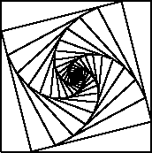 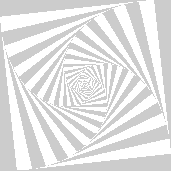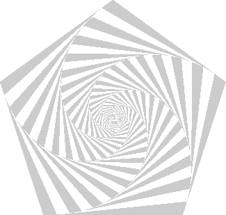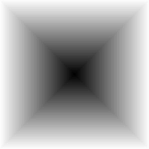 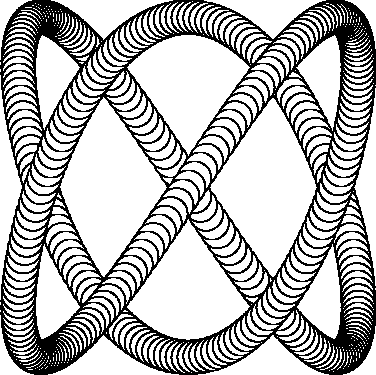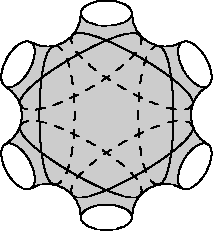
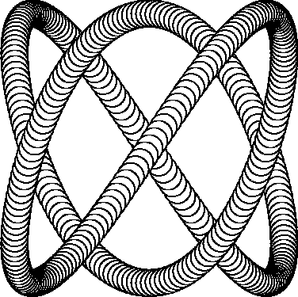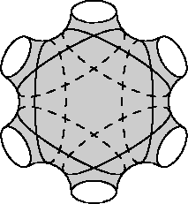
上面两个留作练习。
MetaPost 是由 Bell Labs 的 John Hobby 设计的一种绘图语言, 它的语法近似于 MetaFont，是一种描述性的绘图语言。
用它可以作出非常漂亮的图形. 特别适合于精确的图形. MetaPost 可以生成高质量的 EPS 文件，方便的插入到 TeX 文件里。MetaPost 图片里可以插入TeX对象，跟TeX很完美的结合。
你能用鼠标画出所有你需要的图形吗？能？不要那么肯定。看看这些：
不好办吧？点击以上4个图形就可以知道如何用 MetaPost 得到他们，注意这个短短的文件包含了所有这4个图形。再看看这些：
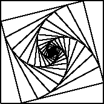 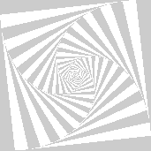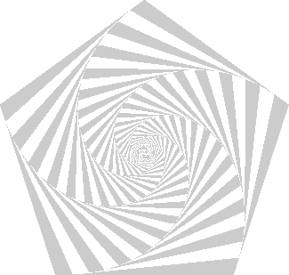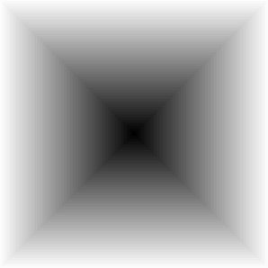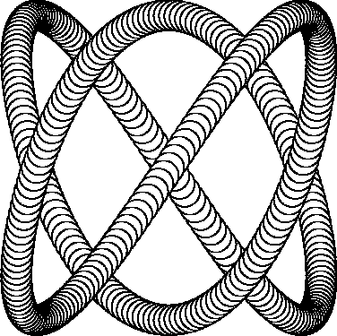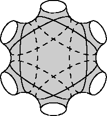
上面两个留作练习。
MetaPost 和 LaTeX 结合使用非常简单。
beginfig(1); ........ ....... endfig; beginfig(2); ........... ......... endfig; .......... .......... .......... end
mpost fig.mp就会得到几个文件： fig.1, fig.2, ... 它们都是 eps 文件。你把它们用
\includegraphics{fig.1}
这样的语句插入 LaTeX 文档就可以了。
MetaPost 缺省使用的是 plain TeX 来处理括在 btex...etex 之间的标号 但是我们可以想一个办法使用 LaTeX 来处理这些，这样我们就可以方便的使用 CJK.
其实每一个纯 TeX 文件的第一行如果出现以下内容：
%&latex
TeX 就会读入 latex 格式
所以利用这个小把戏就可以这样做：
verbatimtex
%&latex
\documentclass{article}
\usepackage{CJK}
\begin{CJK}{GBK}{song}
\begin{document}
etex
verbatimtex
\end{CJK}
\end{document}
etex
label.top(btex 原点 etex, origin);
给个完整的例子，我已经测试通过了：
verbatimtex
%&latex
\documentclass{article}
\usepackage{CJK}
\begin{CJK}{GBK}{song}
\begin{document}
etex
beginfig(1);
drawarrow origin--(0,100);
drawarrow origin--(100,0);
drawdot origin withpen pencircle scaled 2pt;
label.bot(btex 原点 etex, origin);
label.lft(btex $y$ etex, (0,100));
label.lrt(btex $x$ etex, (100,0));
endfig;
verbatimtex
\end{CJK}
\end{document}
etex
end
结果是这样：
其实
mpost -tex=latex file.mp或者把环境变量 TEX 设为 latex，也可以让 MetaPost 使用 LaTeX.
原文：bbs.ctex.org。原作者 cxterm。
经我修改后如下：
metapost 是一个很好的绘图工具。但如果在其中使用了 TeX 字体或中文字体的话， 在 gsview 中不能显示，有些不方便。下面介绍一种方法，可让这些 metapost 图形 正常的在 gsview 中显示。
造成 gsview 无法显示的主要原因是 gs 找不到相应的字体。所以，首先要让 gs 能够找到所需的字体。现在提供两种办法：
export GS_FONTPATH=$TEXMF/fonts/type1/bluesky/cm
如果你有另外的字体目录，用:(冒号)分开路径。 不过这样会使gs每次启动时检查目录里所有字体文件。启动速度变慢。 而且似乎对中文字体有点问题。 不过对于经常改变字体的情况确实很方便。
文件 $TEXMF/fonts/type1/bluesky/cm/Fontmap 里有如下内容：
/CMB10 (cmb10.pfb); /CMBSY10 (cmbsy10.pfb); /CMBX10 (cmbx10.pfb); /CMBX12 (cmbx12.pfb); /CMBX5 (cmbx5.pfb); ...(注意大小写！)
文件 $TEXMFLOCAL/fonts/type1/chinese/gbksong/Fontmap 里有如下内容：
/gbksong01 (gbksong01.pfb); /gbksong02 (gbksong02.pfb); /gbksong03 (gbksong03.pfb); /gbksong04 (gbksong04.pfb); /gbksong05 (gbksong05.pfb); /gbksong06 (gbksong06.pfb); ...
然后把这些路径都放到 GS_LIB 环境变量里：
export GS_LIB=/usr/share/ghostscript/7.05/lib :$TEXMFMAIN/fonts/type1/bluesky/cm:$TEXMFLOCAL/fonts/type1/chinese/gbksong :$TEXMFLOCAL/fonts/type1/chinese/gbkstcaiyun(为了美观，断了行，在你的 ~/.bashrc 里可不能这样！)
以后在 mp 文件最开头加入 prologues:=1; 搞定。
这里说的环境变量设置都是 UNIX 的 Bourne Shell 用法。csh 和 ksh 用户以及 Windows 用户可以灵活变通一下。
使用 epsincl 可以往MetaPost里插入已有的EPS图片。epsincl 由两个文件epsincl.mp和epsincl.awk 组成。epsincl.mp 放在 MetaPost 的系统目录里。epsincl.awk 是AWK语言脚本，需要 AWK 解释执行。
下面是一个例子。use_eps会用EPS文件构造一个picture类型的对象。它可以被作为 label 放在任何地方。
input epsincl;
tertiarydef p scaledto x = p scaled (x/xpart(urcorner(p)-llcorner(p))) enddef;
beginfig(100);
dist:=5cm;
z0=origin;
z1=z0+(dist,0);
picture tex,meta;
tex=use_eps("tex.eps");
meta=use_eps("meta.eps");
label(tex scaledto 100, z0);
label(meta scaledto 100, z1);
label(btex $\sqrt{x^2+y^2}$ etex rotated 60 scaled 1.44, .5[z0,z1]);
endfig;
end
之后运行 MetaPost，再运行AWK 脚本处理生成的文件。假设这里我们的文件是 texmeta.mp。那么用这样的命令行：
mpost texmeta.mp gawk -f epsincl.awk texmeta.100 >texmeta.eps
之后得到的图片会是这个样子：
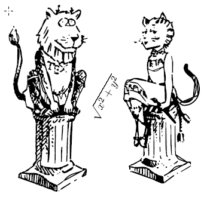
MetaPost 提供了一个 graph 宏包可以根据一个数据文件绘制 2D plot。
graph 有非常多样的样式，你并不受它的约束，你只是拥有了更多的处理外部数据的方式，而且有了“自动坐标缩放”。
你自己看看说明就知道了。你可以用 graph.mp 提供的 gdata 宏来从任意的数据文件读取数据：
首先你需要
input graph;
你必须把你画图表的语句都放在
draw begingraph(图表宽度,图表高度); ... endgraph;
之间。
比如你的一个数据文件 countries.d 有这些内容：
20.910 75.7 US 1.831 66.7 Alg 1.694 70.9 Arg 16.430 77.3 Aus 0.180 53.0 Ban ...
你写一个 MetaPost 文件来绘制这样一幅图：
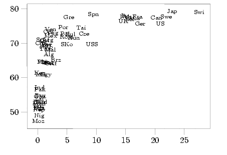
把第3个域的那个国家名字，比如 "US", "Alg", ... 标在前两个域指出的坐标的位置。
你可以这样写：
beginfig(5);
draw begingraph(3in,2in);
gdata("countries.d", s, glabel(s3,s1,s2););
endgraph;
endfig;
其中，
gdata("文件名", 一个变量名，你的操作);
可以对这些数据进行任意的操作。“一个变量名”是你任意给的名字，比如你给一个 s, 那么数据文件的第一列 会被赋值给 s1, 第二列 s2, 第3列 s3, ...
其实 gdata 功能太强了，大部分时候 gdraw 已经能满足你的需要。
gdraw("文件名");
就可以把你存在一个文件里的像这样的数据：
00 4.011 01 3.969 02 3.806 ...
画成图表，太简单了！你还可以在 gdraw("文件名") 之后使用任何 MetaPost 绘图选项，比如 withcolor ... withpen ...。你还可以用一个特别的参数 plot，比如:
gdraw("file") plot btex $\bullet$ etex;
就可以在每个数据点上画上一个 TeX 的 $\bullet$ 符号。看下面这些就是用同样的数据点画出的不同样式的图：
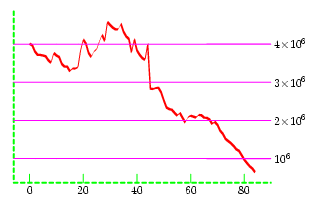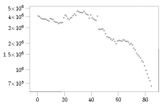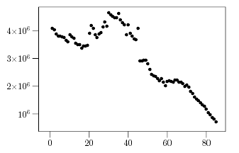
mpgraph 缺省会把数据文件里所有的数据点都画出来。如果你想 限制数据点的范围可以用 setrange, 但是 setrange 只是把图片的 外框修改了一下，实际上曲线会超出外框显示。这个问题直接用 graph 宏包提供的接口无法解决，必须进行 hack. 请看这里。
某些绘图工具可以输出 MetaPost 图形文件。你还可以自己修改这个文件，得到非常好的效果。比如 gnuplot 就可以输出 MetaPost 图形文件。你只要在 gnuplot 里输入：
set terminal mp set output "gnuplot.mp" set isosamples 40 splot [-2.5:2.5] [-2.5:2.5] (x**2+3*y**2)*exp(1-(x**2+y**2))
就可以把输出写到一个叫做 gnuplot.mp 的 MetaPost 文件里。由 MetaPost 处理生成 eps 再插入 LaTeX 文档。下面就是一个例子，里面的标号是我手工修改的。

其实 gnuplot 可以画出很多好看的数学图形。请参考 这个网页。

有人想要用
u:=.5cm; for p=1 upto 100: label(btex $10^p$ etex, (p*u,p*u)); endfor这样的语句在100个位置标注 101, 102, 103 ... 这样的标号。这是不行的。因为 btex ... etex 之间的部分是原封不动交给 TeX 处理的，这样你得到的是100个10p。如果你要使用很大的数字，想要用科学计数法表示，那么可以用 format 宏包，如果你想使用这些大数字计算，可以用 sarith 宏包来计算。
format 宏包就可以处理数字的格式化，你首先 input format, 然后你可以用
init_numbers(s, m, x, sn, e);
设定你的 TeX 数字格式，其中：
s: 表示负数开头用什么符号表示它是负数。一般这个符号是 btex$-$etex
m: 一个TeX的一位数，随便给一个数字就行，比如 btex$1$etex
x: 科学计数法里面怎样表示 x10^{...}, 通常这样做： btex${\times}10$etex
sn: 上标的负号怎么表示？ 一般是 btex${}^-$etex
e: 上标的示例数，用来计算上标占的位置，随便给它一个 btex${}^2$etex 之类的就行。
MetaPost 有一个缺省的设定是：
init_numbers(btex$-$etex, btex$1$etex, btex${\times}10$etex,
btex${}^-$etex, btex${}^2$etex);
只有当你对缺省的格式不满意才需要改变 init_numbers 的设定。
当你用 format(格式串，数字) 时 format 会为你生成漂亮的 TeX 数字。 格式串可以是 %e, %f, %g, %G 之一，可以在字母前加数字表示有效数字，比如 "%10f"。
你可以试试：
label.bot(format("%3g","6.022e23"), origin);
MetaPost 继承了 METAFONT 的定点运算方式。因为印在纸上的东西尺寸不会很大，所以 MetaPost 只允许输入 32768 以内的数。这不是一个很严重的限制，因为你用 MetaPost 画的只是一些很小的样例图片，你不会把一个 10000x10000 的矩阵印在纸上，对吧？但是如果你的图形里需要计算少量的大数，你可以用 sarith 宏包。
sarith 宏包可以计算用字符串表示的数字，你可以用很多种方式表示你的数字，非常自由，比如 "6.022e23"。
数字之间的操作必需用专门的 sarith 提供的运算符 Sadd, Ssub, Smul, Sdiv。Sabs 可以得到一个数字的绝对值。
Scvnum 可以把一个字符串表示的数转换成 MetaPost 使用的 numeral，如果这不会使 MetaPost 的定点计算溢出的话。如果你的数字里没有 "e"，就可以用 scantokens 来得到一个字符串表示的数字的值。因为 scantokens 把后面的字符串当成一段 MetaPost 的输入。
下面是一个比较 hack 一点的例子，我把 format 内部的宏 dofmt_ 挖出来，这样就可以随便表示任意的上标数了。
input format;
input marith;
init_numbers(btex$-$etex, btex$1$etex, btex${\times}10$etex,
btex${}^-$etex, btex${}^2$etex);
%Fe_plus:="*" infont defaultfont;
beginfig(1);
u:=2cm;
n:=3;
pickup pencircle scaled 1pt;
for i=0 upto n: draw (0*u,i*u)--(n*u,i*u); endfor;
for i=0 upto n: draw (i*u,0*u)--(i*u,n*u); endfor;
string mylabel;
for i=0 upto n-1:
for j=0 upto n-1:
l:=j*n+i+1;
label(dofmt_.relax("%3f",(l*1000,l)), (i*u+0.5u,j*u+0.5u));
endfor;
endfor;
a=Mlog_Str("3213000000");
label.bot(Mformat("%e",a), (0,0));
endfig;
end
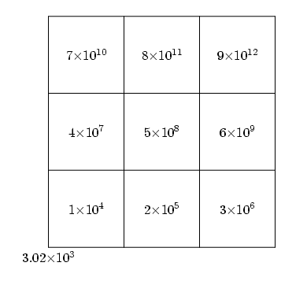
还有不清楚的就自己看看 sarith 和 format 的 mp 文件。
很多人想要从外部文件得到数据进行绘图，可是 MetaPost manual 里没有介绍怎么做。因为这个功能是 0.60 版本以后才有的。
你可以用
readfrom "文件"
得到一行数据。再次使用 readfrom 就会得到后面的行。如果到达文件末尾，readfrom 会返回一个空字符串 EOF，你可以根据这个来判断数据是否画完了。
读入的数据都是作为一个字符串，如果你想要得到数字，你必须用 scantokens 把字符串 evaluate 一下。举个例子，比如你的一个文件 points.dat 里有这些内容：
40,60,70 ....
你可以编辑一个 MetaPost 文件：
beginfig(8); j:=1; draw for p=scantokens readfrom "points.dat": (j*10,p)-- hide(j:=j+1) endfor (j*10,80); endfig;
来根据这个文件里每行提供的离散数据画图。
另外，你可以用
write <string expression> to <file name>
把字串内容写到一个外部文件。
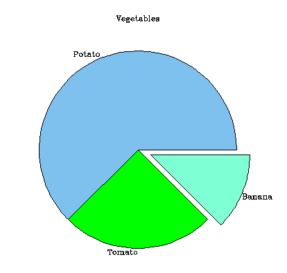
显然 piechart 对于 MetaPost 来说是小事一桩，但是我没有找到专门用来画这种图的 MetaPost 宏包。因为对于大多数场合， piechart 都是一个不好的选择。心理学研究表明，piechart 不适合表示重要的数据，因为人脑对于 piechart 表示的数值关系不敏感，不能有深刻的印象。
但是如果你的项目很少，比如 2–5 个，而且数值之间差别很大，而且你不是用在很正式的场合，你可以用一个小程序叫做 ascii_chart 来画 piechart，它用起来极其简单，可以输出很多种格式。ascii_chart 也可以作 bar chart.
另外 piechart 程序可以作出有“拉出效果的” piechart。ascii_chart 和 piechart 都需要 GNU plotutil 库。你可以到 GNU 的 ftp 服务器下载。
这当然是 MetaPost 的权威指南。
这是 ConTeXt 的 MetaFun 说明书 — 一个图文并茂，非常漂亮的全屏幕 PDF 文档。前面讲的都是 MetaPost，有很多实例。特别注意的是，这个文档本身的背景，按钮，……都是 MetaPost 绘制的。
D. E. Knuth 的大作 The METAFONTbook. 由于 MetaPost 实际上用了 MetaFont 的语言，学习 MetaPost 实际上学会了 MetaFont 的一部分。MetaFont 是 Knuth 跟 TeX 配套设计的一种用来制造字体的程序语言。MATAFONTbook 可以在这里下载 PDF 版本, 请[点击]。
一个法国人提供的大量实例。你也可以看看我这里的“本地版”，我美化过的 :)
http://www.loria.fr/~roegel/animations.html介绍怎样用MetaPost制作三维动画。
一个用来绘制专业级质量 Feynman 图的 MetaPost 宏包，它已经被 CERN(欧洲原子能研究中心)采用。用它可以用简简单单几行字就画出非常漂亮的 Feynman 图：
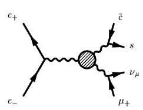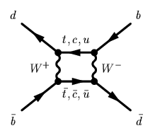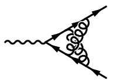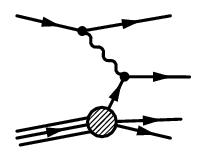
我不懂粒子物理，根本不知道这些图什么意思 //blush …… 如果你有兴趣可以看看这个说明。
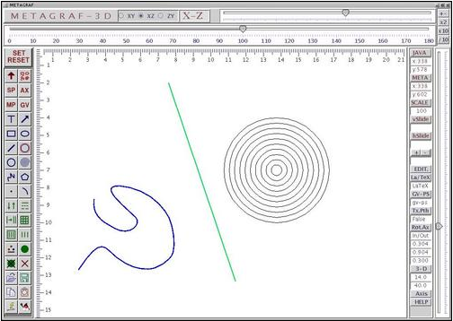
下面给出一些我用 MetaPost 画出的简单图形。点击图片可以看到对应的 MetaPost 源文件。我开始时用 MetaPost 还不是很熟，有时会用一些“笨”办法来画东西，但是我每次看 MetaPost 说明书都会发现新的东西。我能用不同的方法，更好的方法完成我曾经做过的事情。这恐怕是所有优秀工具的特点。
第一幅电路图的所有元件都是我自己设计的 MetaPost 宏产生的，我可以多次复用这些宏，而且可以随意制造自己需要的元件图。

时延树
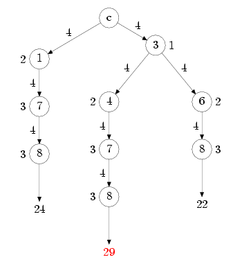
迷宫算法
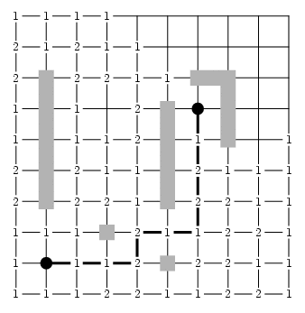
steiner 树
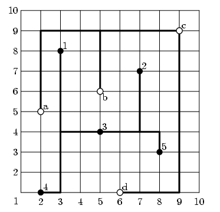
最小生成树
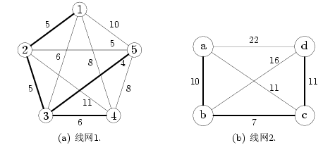

显示了 rectilinear Delaunay triangulation 对应的 minimum spanning tree 和 triple center
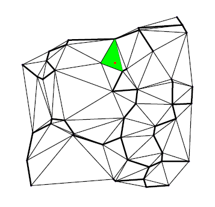